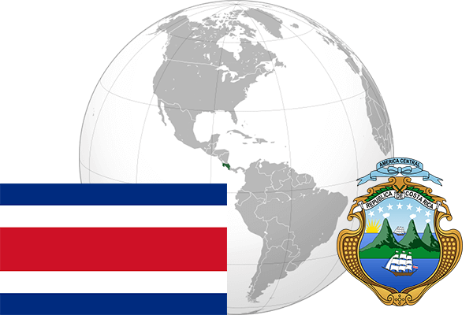

To`liq nomi: Kosta-Rica Respublikasi
Region: Markaziy Amerika Janubiy qismi
Qonunchilik shakli: Respublika
Mustaqillik kuni : 15-sentabr 1821 – yil (Ispaniyadan)
Poytaxt: San-Xose
Maydoni: 51 100 km² (dunyoda 125 -o`rinda )
Chegaradosh davlatlari:Nikaragua, Panama
Aholisi: 4 825 144 (dunyoda 122 -o`rinda, 2006 -yil roʻyxat)
Aholi zichligi: 85 /km²
Aholining o`rtacha yoshi: 77,25 yil ( 79,9 ayollar, 74,6 erkaklar)
Rasmiy tili: Ispan tili
Dini: 85% katolik, 14% protestant
Pul birligi: Kolon
Telefon prefiksi: +506
Internet domen: .cr
Xalqaro tashkilotlarga a`zoligi: BMT (1945 – yildan)
Dengiz va okeanlarga chiqishi: Tinch okeani va Karib dengizi
YIM: Butun: $ 48,77 mlrd, Jon boshiga: $ 10,752 (2006 - yil roʻyxati)
Yirik shaharlari: San-Xose, Puntarenas, Erediya